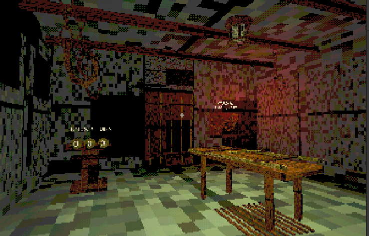

OzanHessick
I build the automation that lets other engineers stop doing things by hand.
Software engineer · open to new-grad roles for 2027
Computer science at the University of Utah, graduating May 2027.
Most recently a software engineering intern on the platform team at Zions Bancorporation.
Works in: Python, TypeScript, C#, C++, SQL · React, FastAPI, Flask · Kubernetes, Helm, Vault, Azure DevOps, Docker · Unity
Chapter 1
The platform team
Software engineering intern, Zions Bancorporation · Salt Lake City · May–Aug 2026
-
Every new repo meant someone setting up an Azure DevOps pipeline by hand.
So I built a TypeScript Backstage action that creates the pipeline straight from the GitHub repo.
-
−25%
Too many near-identical pipeline definitions to maintain.
Reusable Azure DevOps templates cut the ones the platform team maintains by a quarter.
-
A FastAPI dashboard for sprint metrics wouldn't stay up in Kubernetes.
I fixed the deployment, secrets and API auth so my manager could actually use it.
-
Shared Helm templates were all logging into Vault with the same AppRole credentials.
Now each namespace authenticates with its own Kubernetes service account.
TypeScript · Backstage · Azure DevOps · Kubernetes · Helm · HashiCorp Vault · Python · FastAPI
Chapter 2
Side quests
Open a panel to see the full spread.
Chapter 3
Inchoate
A first-person puzzle horror game in Unity, built by a four-person team for the University of Utah senior capstone. Demo this semester, full game in 2027.

You wake up chained in a dim room. Solve its puzzle in the right order, or wake up in the bed again and start over.
The look
I prototyped the game's PS2-era visual style and built a runtime harness that switches between it and the baseline during Play mode. It cuts the render scale in half, uses point-filtered textures, low-res hard shadows and dark fog, and restores every setting on exit.
The room
I built the playable horror demo room from Blender models: hanging hooks, a surgical table, industrial lights. Vertex snapping, affine texture warping, dithering and color banding make it read like 2002.
The play
First-person movement with a flashlight, footsteps and interaction prompts. A combination puzzle reveals an iron crank, and the crank drives the gear mechanism that opens the exit.
I also wrote the first draft of the story and co-designed the death-and-wake-up loop.
Unity 6 · URP · C# · Blender · GitLab merge-request workflow
Chapter 4
Beyond code
I also make things for an audience that scrolls past in half a second.
10M+
views on Playkit's largest campaign, with content for clients including Cash App and Airlearn.
Top 1%
of 200+ Playkit creators for organic brand content.
40M+
combined views on my own channels.
$40K+
raised in humanitarian aid in two months, organizing cultural and fundraising events with the Utah-Turkish American Association.
Off the clock: Disco Elysium, Pathologic 2, manga, the gym. Also, I don't like cheese.
To be continued
Looking for new-grad software roles starting in 2027. Platform, DevSecOps or full-stack.
Drawn in HTML, CSS and a little canvas. No frameworks were harmed.